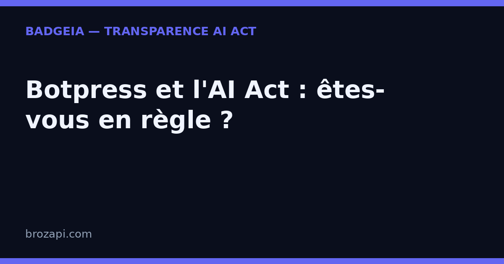

Botpress et l'AI Act : votre agent conversationnel est-il bien signalé ?

Publié le 23 août 2026 · Lecture : 6 minutes · Par l'équipe Brozapi
Botpress est l'une des plateformes les plus utilisées pour créer des agents conversationnels (chatbots) dopés à l'IA et les intégrer à un site via un widget de discussion. Avec plus d'un million de bots déployés et des clients comme Kia, Shell ou Siemens, la plateforme est devenue un standard pour les PME qui veulent un assistant automatisé sans mobiliser une équipe de développeurs. Si votre site embarque un bot Botpress, l'article 50 de l'AI Act vous impose, depuis le 2 août 2026, d'informer clairement vos visiteurs qu'ils échangent avec une intelligence artificielle.
Cette règle est simple à comprendre et, heureusement, simple à appliquer dans Botpress. Elle ne demande ni avocat ni refonte de votre site : il s'agit d'afficher une mention compréhensible, dans la langue de votre visiteur, dès le tout début de l'échange. Voici ce que cela change concrètement pour un bot Botpress déjà en place, et comment vous mettre en règle sans dégrader l'expérience de vos visiteurs.
Pourquoi Botpress déclenche l'article 50
Botpress n'est plus un simple enchaînement de questions-réponses pré-écrites. La plateforme combine désormais plusieurs briques d'intelligence artificielle :
- des nœuds autonomes (« Autonomous Nodes ») : le bot décide lui-même, grâce à un modèle de langage, de ce qu'il répond et de la suite de la conversation ;
- une base de connaissances (« Knowledge Base ») : le bot puise dans vos documents, vos pages web ou vos fichiers pour composer ses réponses ;
- un webchat : le widget de discussion que vous intégrez à votre site et par lequel vos visiteurs dialoguent avec l'agent.
Dès qu'un visiteur reçoit une réponse produite par un algorithme, l'article 50 s'applique. Le régulateur européen considère que toute personne doit pouvoir distinguer une conversation avec un humain d'une conversation avec une machine. Ce n'est ni une critique de Botpress ni une remise en cause de l'IA : c'est une obligation d'information.
Et le point clé pour une PME : vous restez responsable de ce qui s'affiche sur votre site, même si Botpress fournit la technologie. Vous ne pouvez pas vous défausser sur l'éditeur en cas de contrôle.
Ce que dit concrètement l'article 50
L'article 50 impose deux choses. D'abord, l'IA doit être signalée « de manière claire et distincte ». Ensuite, cette information doit être comprise par l'utilisateur : formulée dans sa langue et présentée dès le début de l'interaction, pas cachée au milieu d'une réponse ni reléguée en bas de page.
Appliqué à un bot Botpress, cela concerne plusieurs points de contact :
- la fenêtre de webchat, là où l'agent répond en temps réel ;
- le message de bienvenue, qui doit annoncer la nature de l'interlocuteur dès l'ouverture ;
- les réponses issues de la base de connaissances, générées par l'IA et non rédigées à la main.
L'objectif est toujours le même : le visiteur ne doit pas croire qu'il écrit à un membre de votre équipe alors qu'un algorithme compose la réponse. Ce n'est pas une question de niveau technique, mais de transparence commerciale.
Ce que vous devez afficher
- Une mention visible dès l'ouverture du chat. Par exemple : « Je suis un assistant virtuel alimenté par l'IA. Un conseiller humain peut prendre le relais à tout moment. » Placez-la dans le message d'accueil du bot, pas en bas d'une réponse.
- Un rappel persistant. Un badge de transparence à côté du widget, ou une ligne discrète dans le webchat, qui rappelle que les réponses sont générées par une IA.
- Une possibilité de passer à un humain. Même si l'article 50 ne l'exige pas formellement, annoncer cette option rassure et renforce votre transparence. Botpress propose d'ailleurs une fonction de prise en main humaine.
- Un justificatif de conformité. Notez la date de mise en place, le texte exact affiché et les pages concernées. Ce document vous sera utile en cas de contrôle.
Ces éléments se combinent. Une mention bien visible dans le chat peut suffire si l'IA n'intervient qu'à cet endroit ; si elle intervient à plusieurs endroits, chaque point de contact doit être couvert. Pour une vue d'ensemble de vos obligations, consultez notre checklist de conformité pour les PME.
Comment configurer la transparence dans Botpress
Bonne nouvelle : Botpress vous donne tous les leviers nécessaires, sans toucher au code. Voici les endroits à vérifier.
1. Le message de bienvenue du bot. Dans le Studio, ouvrez la configuration de votre agent (ou le nœud d'entrée de votre workflow) et faites-lui annoncer explicitement qu'il s'agit d'un assistant automatisé. C'est l'emplacement le plus important : c'est la première chose que lit le visiteur, et c'est là que la mention est la plus facile à vérifier pour un contrôleur comme pour un client.
2. L'en-tête du webchat. Personnalisez le titre ou la description de la fenêtre de discussion pour y glisser une mention du type « Assistant IA — réponses générées automatiquement ». Vérifiez le rendu sur mobile, où la majorité de vos visiteurs consultent votre site.
3. Les réponses de la base de connaissances. Si votre bot répond à partir de documents, ajoutez une consigne de transparence dans la configuration de l'agent, afin qu'il précise ponctuellement que sa réponse est générée par IA lorsqu'une ambiguïté est possible.
4. Le passage à un humain. Activez la fonction de prise en main humaine de Botpress et mentionnez-la dans le message d'accueil. Un simple « tapez "conseiller" pour parler à quelqu'un » change déjà la perception de vos visiteurs.
Une fois ces réglages faits, testez simplement : demandez à une personne extérieure au sujet de lire le chat et de dire, en quelques secondes, si elle comprend qu'elle parle à une IA. Si elle hésite, reformulez.
Les questions que se posent les équipes
Mon bot ne récite que des réponses pré-écrites. L'article 50 s'applique-t-il ?
Si aucune réponse n'est générée par un algorithme (aucun nœud autonome, aucune base de connaissances), la transparence peut ne pas s'imposer. Mais dès qu'une partie de la conversation repose sur l'IA, l'obligation s'applique. Dans le doute, signalez la nature de l'assistant : c'est plus sûr, et mieux perçu par vos visiteurs.
La mention doit-elle être en français ?
Oui, dans la langue du visiteur. Si votre site est en français, la mention doit l'être aussi. Pour un site multilingue, adaptez le texte à chaque langue. Ne vous contentez pas d'une version anglaise sur un site francophone.
Qui est responsable si la mention manque ?
C'est l'entreprise qui exploite le site — donc vous — qui est responsable de la mise en conformité, pas Botpress. L'éditeur fournit l'outil, mais vous choisissez ce qui est affiché à vos visiteurs. Conservez une trace de votre configuration et de sa date de mise à jour.
Que risque-t-on concrètement ?
Le non-respect de l'obligation de transparence expose à des sanctions prévues par l'article 99 du règlement : jusqu'à 15 millions d'euros ou 3 % du chiffre d'affaires mondial pour les manquements à la transparence, et jusqu'à 7,5 millions d'euros ou 1 % pour la fourniture d'informations incorrectes. De quoi traiter le sujet sérieusement, même pour un petit site.
Vérifiez votre site en 30 secondes
Notre scanner détecte automatiquement Botpress sur votre site et vérifie la présence d'une mention de transparence :
Si une mention manque, le kit BadgeIA (39 €) vous fournit un badge prêt à installer en deux lignes de code et une page registre datée, votre preuve de bonne foi en cas de contrôle.
Guides par plateforme : Intercom · Crisp · Tidio · Chatbase · Botpress
Cet article est fourni à titre informatif et ne constitue pas un conseil juridique. Pour une analyse de votre situation, consultez un professionnel du droit.
Liens : ← Tous les guides · AI Act art. 50 : le guide complet · La checklist de conformité PME · Crisp et l'AI Act · Intercom et l'AI Act · Tidio et l'AI Act